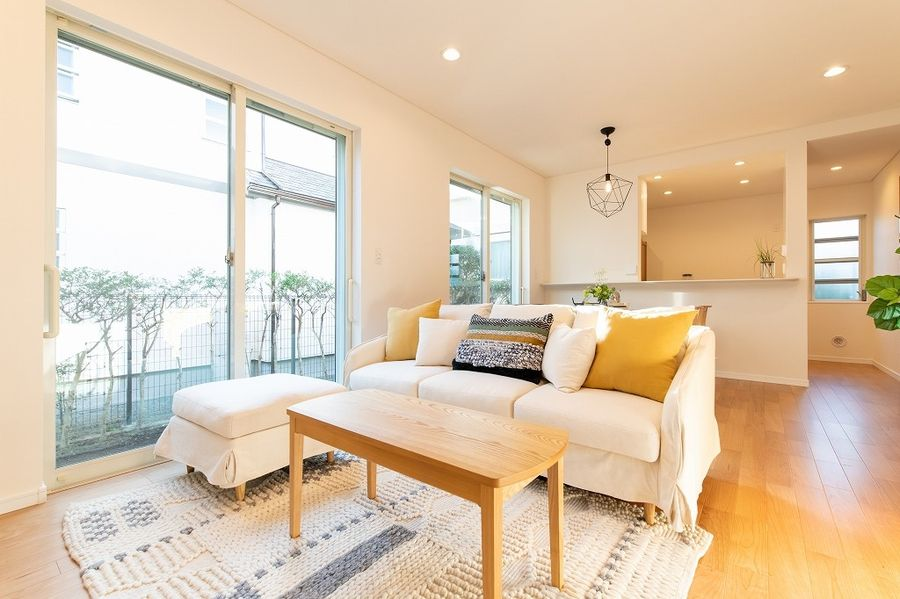
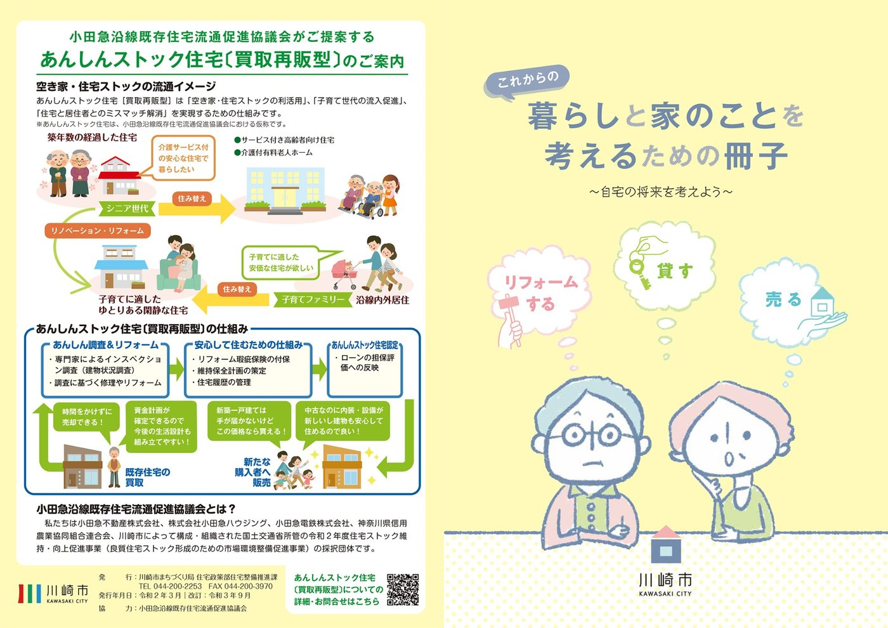

5者が連携して取り組んでいます


活動エリア 川崎市多摩区・多摩市

学び・啓発
教育啓発ワークショップや出張セミナーを通じて、住まいの終活と住み継ぎの知識を地域に広げます。

相談・予防
空き家になる前の早い段階から相談を受け付け、住まいの将来を家族と一緒に考える場をつくります。

再生・流通
インスペクションやリフォームの専門家と連携し、既存住宅を安心して次の世代へつなぎます。

官民連携・モデル事業
行政・不動産・金融機関が協働し、地域の空き家対策を制度・モデル事業として形にしていきます。

2026年度 空き家対策モデル事業
小田急沿線既存住宅流通促進協議会の提案が
小田急沿線既存住宅流通促進協議会の提案が
国土交通省「令和8年度空き家対策モデル事業」に採択されました！
小田急沿線既存住宅流通促進協議会の提案が、国土交通省が所管する「令和8年度空き家対策モデル事業」において、2026年7月8日付で事業採択されました。神奈川県川崎市麻生区および多摩区において、「学びで掘り起こし、相談でつなぎ、再生で未来へ渡す空き家対策モデル」として、住まいに関する学びや相談機会の提供により、空き家予備軍や潜在的な地域課題を掘り起こします。そしてその後の空き家再生・流通につなげる取り組みを、官民金(行政・民間企業・金融機関)が連携して推進していきます。
詳しくはこちら
Track Record
住まいを未来へつなぐ、これまでの歩み
空き家になる前の学びや相談から、既存住宅の再生・流通まで。2017年の発足以来、地域や関係団体と連携しながら、住み継がれるまちに向けた取組みを進めています。




